7030B12 sliding roof (assembly) - r+r
- Path
- Procedures > 70 FITTINGS > 7030 SUN ROOF AND HOOD > 7030B sliding roof > 7030B12 sliding roof (assembly) - r+r
- Kind
- repair procedure (removal / refitting; the operation number is the code)
- Applies to
- all engines; all production periods
- Interactive page
- https://sloeber94.github.io/elrnDB-fPnd/en/#/2753151
Applies to: all engines; all production periods
 Removing
Removing
 Refitting
RefittingDisconnect the battery negative terminal.
7040H16 roof panel lining - r r .
7030B18 sliding roof glass - r+r
1. Fit the Fein n209 NL or equivalent blade on the vibrating knife.
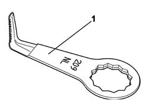
Applies to: all engines; all production periods
1. Working from outside the car, cut the front section of the bead of sealant (1a) and side sections (1b) of the sealant.
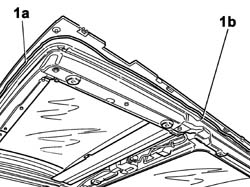
Applies to: all engines; all production periods
1. Working from inside the car, cut the rear section of the bead of sealant (1a).
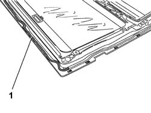
Applies to: all engines; all production periods
1. Fit the Fein n 168 or equivalent blade on the vibrating knife.
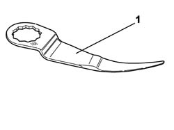
Applies to: all engines; all production periods
1. If necessary, lift the front two corners of the roof frame (1a), folding them backwards and finish cutting in the area underneath.
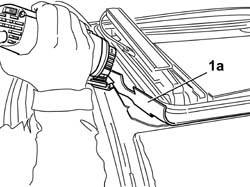
Applies to: all engines; all production periods
1. With the help of a second operator, who working from inside the vehicle lifts the parts of roof (1a) already free of sealant, finish cutting along the entire perimeter and remove the roof.
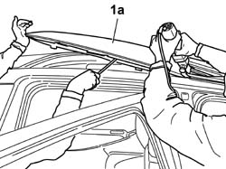
Applies to: all engines; all production periods
Refitting
Removing1. Remove the sealant residues (1a) present on the bodyshell (1b), straighten any panels that may have been distorted during removal and if necessary repaint the areas concerned.
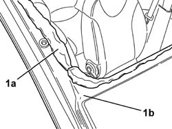
Applies to: all engines; all production periods
Clean with heptane the glueing surface of the ceiling.
1. Using a suitable gun (1a) (manual or pneumatic), extrude a bead of sealant (1b) of the dimensions indicated in the figure along the line of the removed sealant.
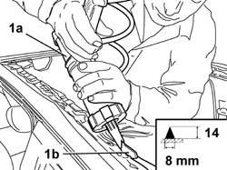
Applies to: all engines; all production periods
1. Fit two spacers (1a) 4 mm thick at the front of the roof.
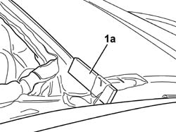
Applies to: all engines; all production periods
1. Using four suction pads (1a), lift the roof and position it, making sure that it rests firmly against the spacers (1b) fitted previously.
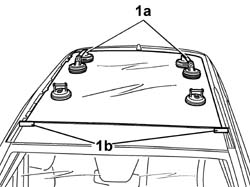
Applies to: all engines; all production periods
1. Fit suitable shims (1a) of a material that cannot damage the glass, and compress the roof in position using belts (1b).
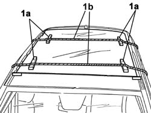
Applies to: all engines; all production periods
7030B18 sliding roof glass - r+r
Connect the sunroof motor electrical connections.
7040H16 roof panel lining - r r .
Connect the battery negative terminal.